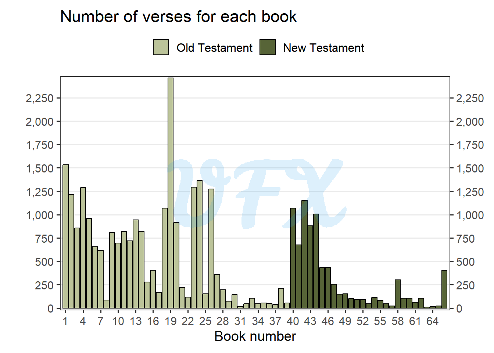
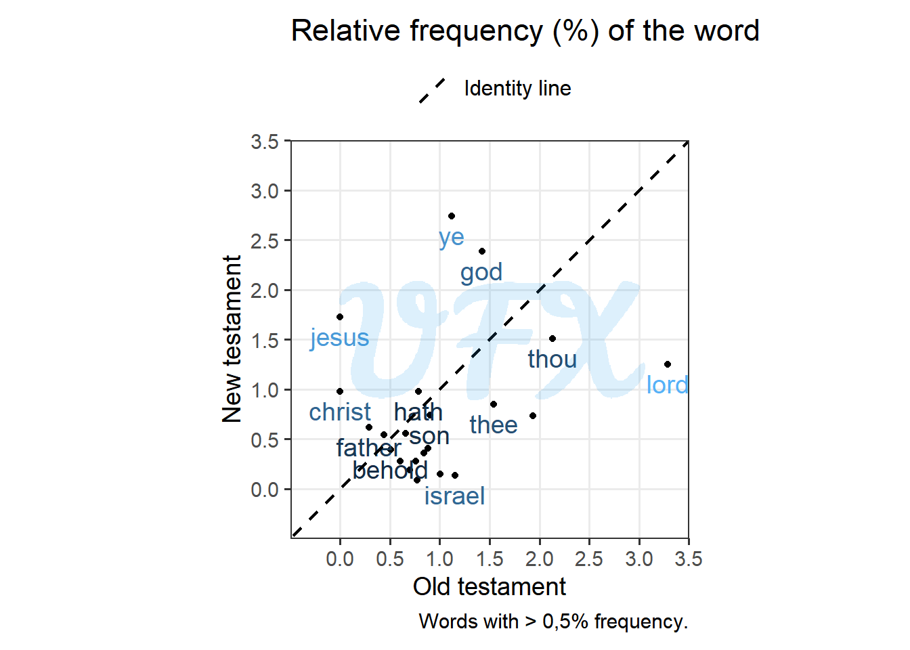
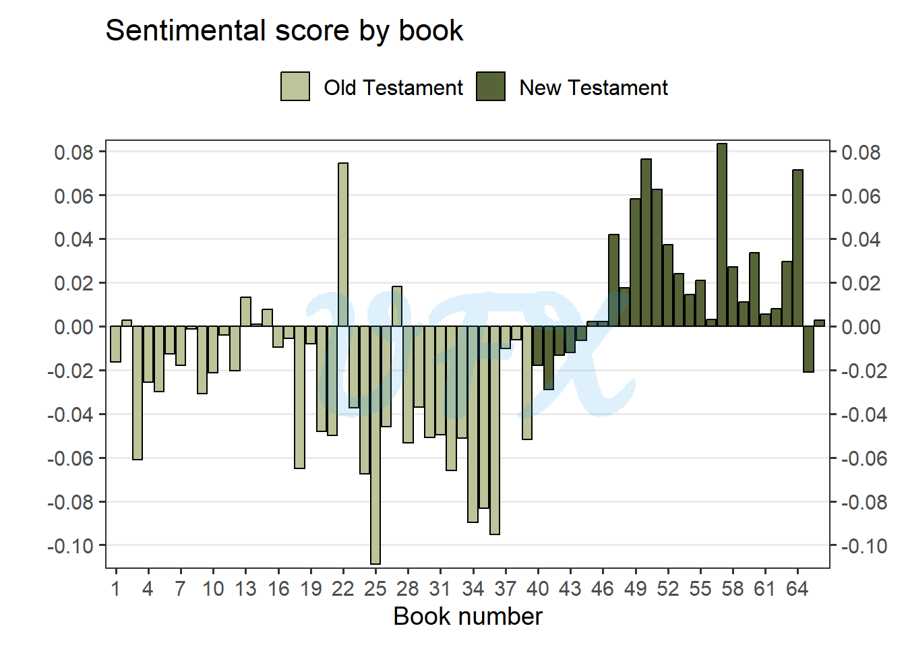

In this post of the series An analysis of, I’ll do a data analysis of my favorite board game, Settlers of Catan.
Context
The King James Bible, first published in 1611, is a crucial English translation of the Bible.
“Hey, let’s have a fancy new translation!” exclaimed King James I of England. So he enlisted the help of a group of outstanding scholars. They were inspired by old English versions as well as the original Hebrew and Greek texts.

For the analysis we will use the text from the King James Bible.
Disclaimer: the goal here is just to show and apply some techniques to work with text data.
How is the bible built?
This Bible is divided into two parts:
The Old Testament, which contains all of the religious material from before Jesus appeared;
The New Testament, which contains everything about Jesus and his followers.
In addition from the testaments, the bible is also divided in books and verses.
| Testament | Books | Verses | Verses/Books |
|---|---|---|---|
| Old | 39 | 23,145 | 593.4615 |
| New | 27 | 7,957 | 294.7037 |
| Total | 66 | 31,102 | 471.2424 |

Clearly not, as the number of verses varies greatly, with an outlier in the old testament, The Book of Psalms, having astounding 2,461 verses.
- Book of Psalms
-
-
It is a collection of religious songs, prayers, and poems attributed to King David of Israel as well as other authors such as Asaph, Korah’s sons, Solomon, and Moses.
Praise, thanksgiving, trust in God, deliverance, longing for God’s presence, justice, and worship are just a few of the themes covered in the psalms. They are a rich source of spiritual reflection, expressing a wide range of human emotions and providing believers with comfort, guidance, and encouragement. The psalms are well-known for their poetic form, vivid imagery, and long-lasting spiritual and literary value, and they are widely used in Jewish and Christian worship.
With the exception of the last book, The Revelation of St. John the Divine, the new testament begins with books with a greater number of verses but decreases as the bible progresses.
- The Revelation of St. John the Divine
-
-
The Book of Revelation, attributed to the apostle John, contains apocalyptic visions received by John while he was exiled on the island of Patmos.
It contains prophetic messages and symbolic language depicting the end times, final judgment, and God’s victory over evil. The book deals with topics such as faithfulness, persecution, divine sovereignty, and the establishment of a new heaven and earth. It contains messages to seven churches, heavenly worship, and predictions of future events, and it has sparked ongoing interpretation and fascination among Christians.
Word-o-Rama
Now let’s analyze the word frequency, the bible possess 789,649 words in total, where 12,784 are unique words. Here is the top 10 most frequent words:
Word Frequency
1 the 63,925
2 and 51,696
3 of 34,617
4 to 13,562
5 that 12,912
6 in 12,667
7 he 10,420
8 shall 9,838
9 unto 8,997
10 for 8,970The result does not show much; to improve the outcome, we can eliminate this type of word; to do so, we have a dataset of stopwords.
- Stopword
-
-
A word that is commonly used in a language that is thought to have little or no meaningful information and is frequently removed from text during natural language processing (NLP) tasks such as text analysis, information retrieval, or text mining. Articles (e.g., “a,” “an,” “the”), pronouns (e.g., “I,” “you,” “he”), prepositions (e.g., “in,” “on,” “at”), and conjunctions (e.g., “and,” “or,” “but”) are examples of stopwords.
After removing this stop words we have 273,394 words total, of which 12,332, so just 452 stopword were removed, but that were used more than 516,255 times.
Now, last see the top 10 most frequent words:
Word Frequency
1 lord 7,830
2 thou 5,474
3 thy 4,600
4 god 4,445
5 ye 3,982
6 thee 3,826
7 israel 2,565
8 son 2,370
9 hath 2,264
10 king 2,256Words referring to God appear, as expected, but how much of the old testament influences this?

The graph above shows the relative frequency of the most common words by testament; as a result, we can see that some words are shared, but we can also see which words diverge the most as we plot the identity line.
For example, “Jesus” and “Christ” appear only in the New Testament, which is no surprise, given the criteria for such division.
On the other hand, the word “lord” appears nearly three times more in the old testament, owing to the fact that God is a more prominent figure there.
Sentimental Scriptures
The text will then be classified as positive, negative, or neutral using sentiment analysis. This is accomplished by employing a third-party dictionary with a score assigned to each word.

We see that most books of the old testament have a negative sentiment, with a huge exception been the The Song of Solomon (book #22).
- The Song of Solomon
-
-
It is a poetic dialogue between a bride and her beloved in which they express their deep affection and longing for one another through metaphorical language. The book celebrates the beauty of romantic love and is frequently interpreted as an allegory for God’s love relationship with His people. It contains vivid imagery and has sparked controversy due to its explicit content. Overall, it delves into themes of love, desire, and the beauty of human relationships, challenging readers to consider the nature of love and intimacy.
The first books of the new testament start negative, but became highly positive. But we can see that the penultimate book (The General Epistle of Jude) is more negative than the other final books.
- The General Epistle of Jude
-
-
The General Epistle of Jude is a brief New Testament letter attributed to Jude, the brother of James and a disciple of Jesus Christ. It addresses the presence of false teachers and emphasizes the importance of discernment and faith. Jude warns believers about the consequences of false teachings and encourages them to fight for the true gospel. The letter encourages believers to strengthen their faith, to be compassionate toward those who doubt, and to praise God for His power and ability to keep them from falling. Overall, it is a call to stand firm in the face of false teachings and to rely on God’s grace and truth.